한줄 요약 — 버킷 경로를 미리 정하지 않고 관절 waypoint와 시간간격을 직접 최적화하되, 토양 진입·굴착·이탈의 이동방향과 heading을 반평면 제약으로 표현하고 swept volume으로 채움률을 지정한다. 실험은 짧고 반복성 높은 궤적을 보였으나 토양 동역학이 없는 체적 proxy와 one-stage의 낮은 최적화 성공률이 실제 굴착기 확장의 핵심 과제다.
1.연구 배경 및 동기
고정 작업단계를 벗어난 굴착 궤적의 직접 최적화
기존 자동 굴착은 버킷을 진입·끌기·닫기·인양하는 단계를 사람이 정한다. 구현은 쉽지만 재료 형상과 목표량이 달라도 경로가 고정된다. 저자들은 Cartesian 경로를 먼저 만들지 않고 관절 waypoint와 구간시간을 한 최적화에서 구한다. 짧은 joint trajectory가 버킷의 진입·굴착·이탈 규칙과 목표 swept volume을 동시에 만족하도록 한다.
굴착을 motion primitive 연결이 아니라 제약된 trajectory optimization으로 본다. 시작·종료 자세, 토양 표면, 목표 채움계수와 관절 제한을 입력하고 optimizer가 내부 waypoint를 조정한다. sampled 버킷 위치·heading과 토양 아래 기하학적 swept volume을 검사해 최소 관절길이 또는 최소시간 해를 얻는다.
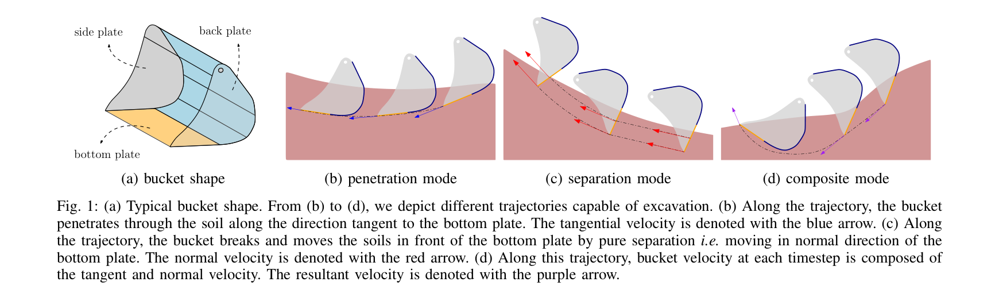
원문 Figure 1 · PDF p.2 — Fig. 1: (a) Typical bucket shape. From (b) to (d), we depict different trajectories capable of excavation. (b) Along the trajectory, the bucket penetrates through the soil along the direction tangent to the bottom plate. The tangential velocity is denoted with the blue arrow. (c) Along the trajectory, the bucket breaks and moves the soils in front of the bottom plate by pure separation i.e. moving in normal direction of the bottom plate. The normal velocity is denoted with the red arrow. (d) Along this trajectory, bucket velocity at each timestep is composed of the tangent and normal velocity. The resultant velocity is denoted with the purple arrow.
선행 연구의 한계
사전 고정 단계는 토양 형상과 목표량이 바뀌어도 불필요한 이동과 제한된 궤적을 남긴다.
Cartesian path 뒤의 IK는 joint limit·속도와 관절공간 효율을 직접 최적화하기 어렵다.
버킷 끝점만 맞추면 heading과 토양 진입·이탈 방향이 작업 물리에 어긋날 수 있다.
기하학 swept volume은 토질·입자 흐름과 절삭력을 반영하지 못한다.
이 연구의 기여
관절 waypoint와 구간시간의 연속 spline을 직접 최적화하는 굴착 framework를 제안했다.
진입·굴착·이탈의 translation·heading을 여덟 선형/반평면 제약으로 만들었다.
swept volume과 bucket fill factor 범위로 목표 적재량을 지정했다.
결정변수는 관절 waypoint Q와 인접 구간시간 T다. 첫·마지막 구간은 경계 속도·가속도를 만족하는 quintic, 중간은 waypoint를 통과하는 cubic spline이다. sampled q(t)를 forward kinematics에 넣어 버킷 tip과 heading 제약을 검사한다.
최소길이는 Q를, 최소시간은 Δt_i의 합을 줄인다. one-stage는 Q·T를 함께, two-stage는 경로 Q 뒤에 T를 최적화한다. 관절 위치·속도, 시작·종료, 버킷 이동방향·heading과 fill-factor 범위를 모두 적용한다.
처리 파이프라인
1
작업면과 경계조건 설정
height map으로 토양면을 정의하고 시작·종료 관절상태와 버킷 자세를 둔다. 진입 전, 내부 굴착과 이탈 후에 적용할 위치·heading 규칙을 준비한다.
2
관절 waypoint 초기화
관절공간 Q={q0,…,qn}의 끝은 경계조건에 고정하고 내부 waypoint가 경로 모양을 결정한다. solver가 작업제약 안에서 내부점을 수정한다.
3
혼합 spline 보간
첫·마지막 segment는 quintic으로 경계 속도·가속도를 처리하고 중간은 cubic으로 연결해 연속 위치·속도 궤적을 만든다.
4
중간 시점 sampling
각 segment의 중간 path point도 sampling한다. q(t)를 forward kinematics로 위치·heading에 변환해 waypoint 사이의 방향 위반을 줄인다.
토양 아래 swept volume을 bucket capacity로 정규화한 기하학적 목표량이다.
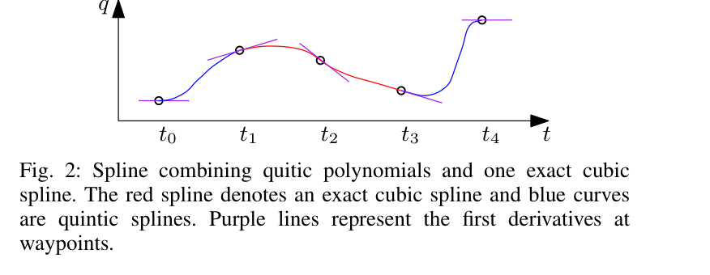
원문 Figure 2 · PDF p.3 — Fig. 2: Spline combining quitic polynomials and one exact cubic spline. The red spline denotes an exact cubic spline and blue curves are quintic splines. Purple lines represent the first derivatives at waypoints.
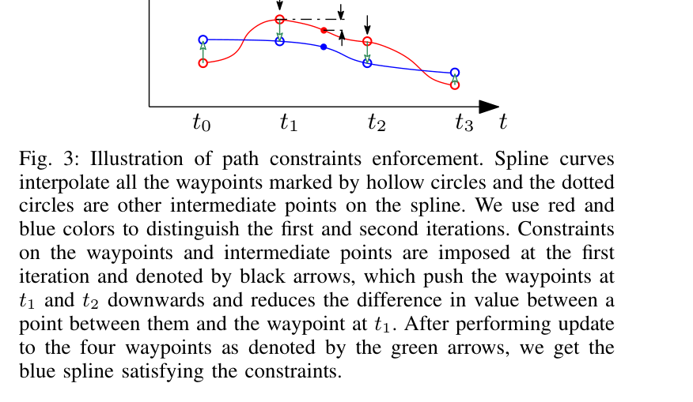
원문 Figure 3 · PDF p.3 — Fig. 3: Illustration of path constraints enforcement. Spline curves interpolate all the waypoints marked by hollow circles and the dotted circles are other intermediate points on the spline. We use red and blue colors to distinguish the first and second iterations. Constraints on the waypoints and intermediate points are imposed at the first iteration and denoted by black arrows, which push the waypoints at t1 and t2 downwards and reduces the difference in value between a point between them and the waypoint at t1. After performing update to the four waypoints as denoted by the green arrows, we get the blue spline satisfying the constraints.
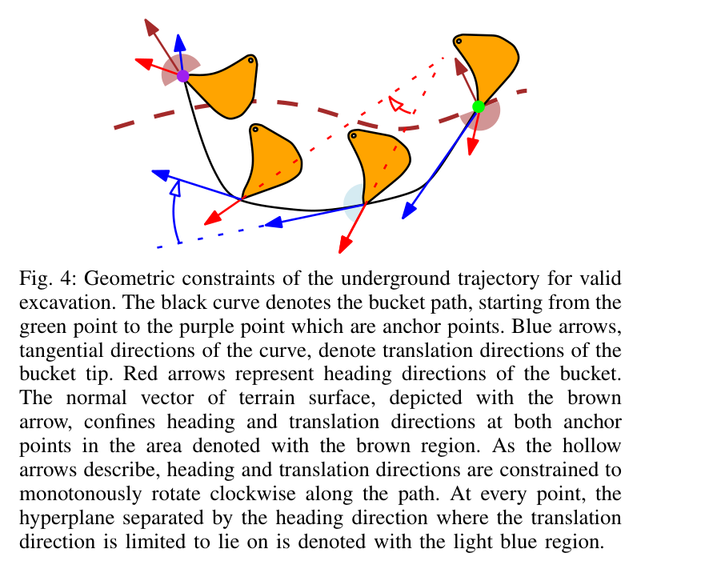
원문 Figure 4 · PDF p.4 — Fig. 4: Geometric constraints of the underground trajectory for valid excavation. The black curve denotes the bucket path, starting from the green point to the purple point which are anchor points. Blue arrows, tangential directions of the curve, denote translation directions of the bucket tip. Red arrows represent heading directions of the bucket. The normal vector of terrain surface, depicted with the brown arrow, confines heading and translation directions at both anchor points in the area denoted with the brown region. As the hollow arrows describe, heading and translation directions are constrained to monotonously rotate clockwise along the path. At every point, the hyperplane separated by the heading direction where the translation direction is limited to lie on is denoted with the light blue region.
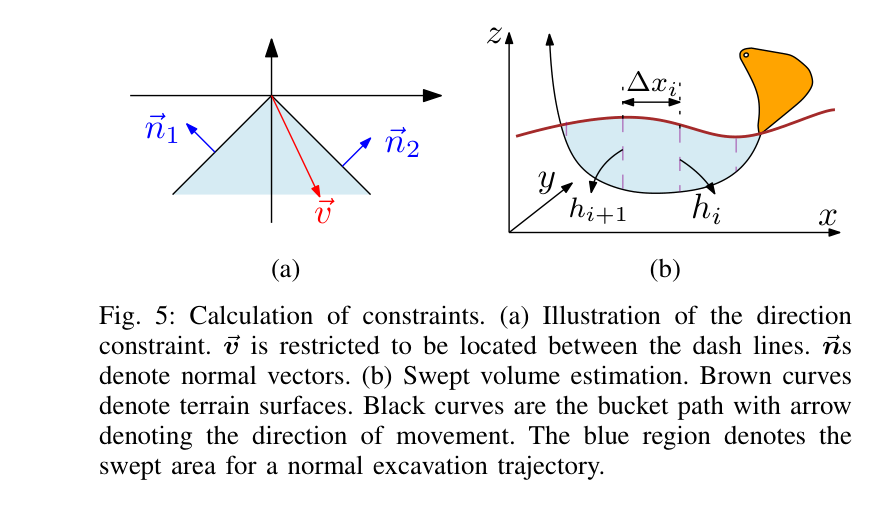
원문 Figure 5 · PDF p.5 — Fig. 5: Calculation of constraints. (a) Illustration of the direction constraint. ⃗v is restricted to be located between the dash lines. ⃗ns denote normal vectors. (b) Swept volume estimation. Brown curves denote terrain surfaces. Black curves are the bucket path with arrow denoting the direction of movement. The blue region denotes the swept area for a normal excavation trajectory.
3.핵심 기술
관절공간 자유형 굴착
joint waypoint를 직접 변수로 두고 forward kinematics로 버킷 제약을 확인한다. 시작·종료 사이 내부 waypoint를 조절해 고정 sequence보다 짧은 경로를 찾는다.
Q와 T가 결정변수
quintic endpoint와 cubic middle
Cartesian 제약과 joint-space 목적 결합
반평면 motion rule
translation과 heading이 phase별 허용방향에 있는지를 half-plane으로 검사한다. 여덟 규칙이 진입은 토양 쪽, 이탈은 바깥쪽, 내부는 재료 포획방향이라는 의미를 유지한다.
phase별 translation 제한
heading으로 유출 방지
중간 sample에도 적용
swept volume 목표량
연속 자세의 단면을 trapezoid로 근사해 폭 방향으로 적분하고 bucket capacity로 나눠 K_bf를 얻는다. 계산은 가볍지만 중복영역과 토양유동을 몰라 실제 적재를 과대평가한다.
trapezoidal area
폭 방향 적분
K_bf 범위 제약
one-stage와 two-stage
two-stage는 경로 뒤 시간을, one-stage는 경로·시간을 함께 최적화한다. one-stage가 더 빠른 해를 냈지만 비선형 결합으로 optimization success rate가 낮았다.
평균시간 18% 단축
최소시간 16% 단축
표준편차 42% 감소, 성공률 저하
축소 검증의 범위
UR5의 두 관절을 고정한 4-DOF와 pine-needle soil로 검증했다. perception·planning·하중측정은 연결했지만 실제 굴착기의 유압지연·토압·linkage는 재현하지 않는다.
D435 height map
6축 force/torque 무게측정
유압·실토질 미검증
4.실험 결과
실험 환경·장비·데이터
UR5 마지막 두 joint를 고정해 4-DOF 굴착기 운동을 모사했다.
D435로 매 굴착 전 height map을 얻고 6-axis force/torque sensor로 버킷 무게를 측정했다.
저밀도·저점착 pine-needle soil을 썼고 가득 찬 버킷은 약 1.6N이었다.
실험 프로토콜
flat/slope×10s/5s 네 조건에서 K_bf를 1부터 높이며 조건별 20회 수행했다.
12개 초기화 group에서 one-stage와 two-stage를 비교하고 초기 구간시간은 2s였다.
x=0.4~0.8m, y=0, 표면 약 -0.1m, 목표깊이 -0.12m, 속도상한 0.3rad/s, K_bf=3으로 다섯 회 반복했다.
원문 Figure 7 · PDF p.6 — Fig. 7: Typical bucket paths generated for flat and slope terrain. Gray dashed lines represent the terrain surfaces. Blue curves are paths of the bucket tip. Red arrows denote heading directions of bucket poses sampled on trajectories.
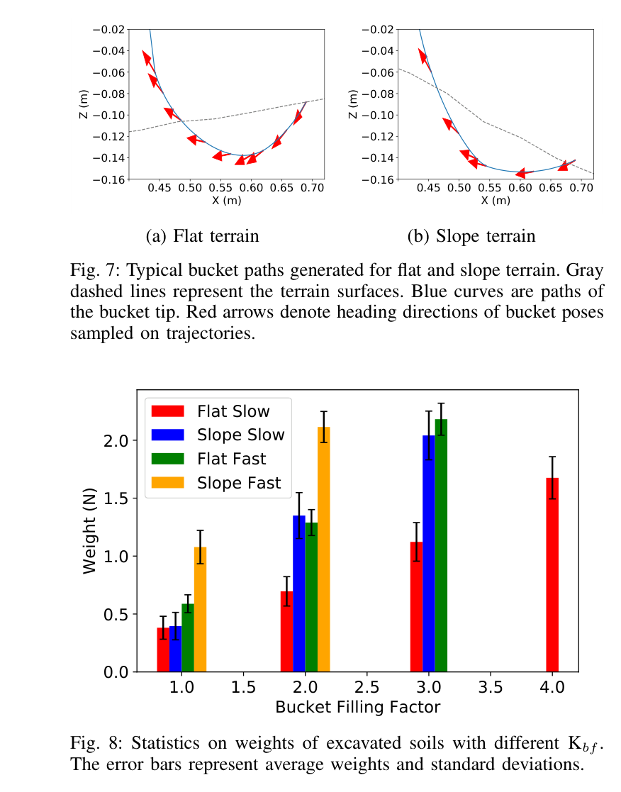
원문 Figure 8 · PDF p.6 — Fig. 8: Statistics on weights of excavated soils with different Kbf. The error bars represent average weights and standard deviations.
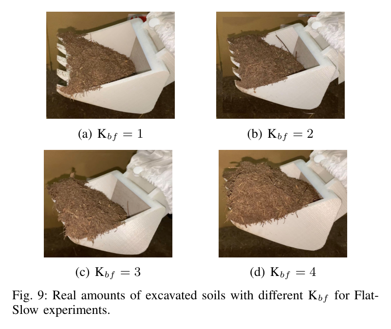
원문 Figure 9 · PDF p.6 — Fig. 9: Real amounts of excavated soils with different Kbf for Flat- Slow experiments.
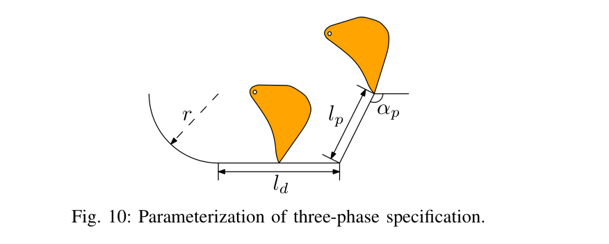
원문 Figure 10 · PDF p.6 — Fig. 10: Parameterization of three-phase specification.
핵심 결과 해석
Table I의 최소 joint-trajectory에서 제안법은 conventional trajectory보다 관절경로를 약 60% 줄였다. 버킷 path를 고정하지 않고 작업 제약 안에서 waypoint를 직접 움직인 효과지만 축소 robot의 특정 조건 결과다.
12개 초기화 group에서 one-stage는 two-stage보다 최소 실행시간 16%, 평균 18%, 시간 표준편차 42%를 줄였다. 경로와 시간을 함께 바꾸면 더 빠르고 일관된 궤적을 찾지만 optimization success rate는 더 낮아 초기값과 수렴에 민감했다.
K_bf와 실제 무게는 대체로 함께 증가했지만 정적 swept volume은 실제 fill을 과대평가했다. 같은 K_bf에서 5s가 10s보다, slope가 flat보다 더 많이 담기는 경향은 속도와 기울기의 영향을 보여준다.
K_bf=3 반복 실행시간은 7.01, 7.68, 7.24, 6.13, 6.53s였다. 매 cycle height map을 갱신했지만 optimization 계산시간, 실패복구와 장기간 throughput은 보고하지 않았다.
정량 결과
평가 항목
정량 결과
조건·맥락
원문 근거
joint trajectory 길이 감소
약 60%
최소 관절길이 formulation과 conventional trajectory 비교
PDF p.7
one-stage 최소 실행시간 감소
16%
12개 초기화 group에서 two-stage 대비
PDF p.7
one-stage 평균 실행시간 감소
18%
12개 초기화 group에서 two-stage 대비
PDF p.7
실행시간 표준편차 감소
42%
one-stage가 two-stage보다 작은 변동
PDF p.7
반복 굴착 실행시간
7.01, 7.68, 7.24, 6.13, 6.53s
K_bf=3, joint speed 상한 0.3rad/s의 다섯 excavation
PDF p.8
체적 실험 반복수
조건별 20회
flat/slope×10s/5s 네 조건
PDF p.6
실패 사례와 경계조건
swept volume은 토양 유동과 중복영역을 반영하지 않아 실제 적재량을 과대평가했다.
one-stage는 빠른 해를 냈지만 optimization success rate가 낮았다.
같은 K_bf에서도 표면기울기와 속도에 따라 실제 무게가 달랐다.
UR5와 pine-needle soil은 유압굴착기의 힘·토질 상호작용을 대표하지 않는다.
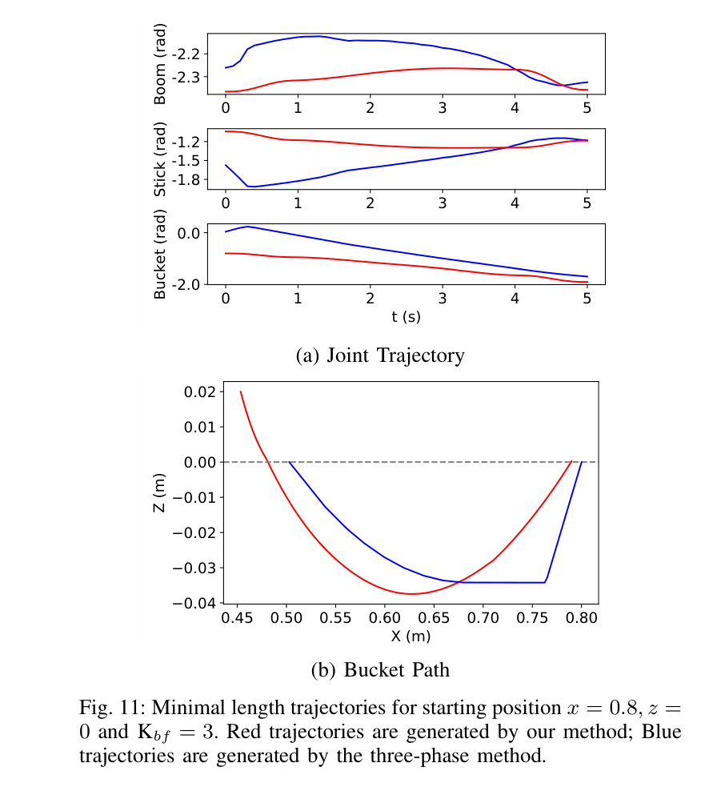
원문 Figure 11 · PDF p.7 — Fig. 11: Minimal length trajectories for starting position x = 0.8, z = 0 and Kbf = 3. Red trajectories are generated by our method; Blue trajectories are generated by the three-phase method.
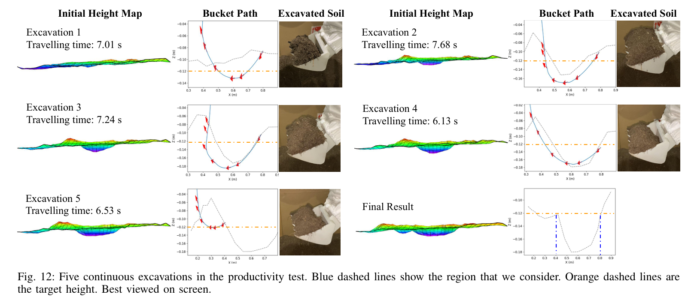
원문 Figure 12 · PDF p.8 — Fig. 12: Five continuous excavations in the productivity test. Blue dashed lines show the region that we consider. Orange dashed lines are the target height. Best viewed on screen.
5.한계 및 향후 연구
현재 한계
정적 swept volume이 토양 유동과 bucket 내부 손실을 무시해 실제 fill을 과대평가한다.
one-stage의 낮은 success rate는 경로·시간 동시 최적화가 초기값과 비선형 제약에 민감함을 보인다.
UR5 4-DOF와 pine-needle soil만 검증해 유압장비·실제 토질 일반화가 확인되지 않았다.
계획시간, collision·force 제약과 실패 recovery가 정량평가되지 않았다.
상위 계획기의 dig pose·target fill을 하위 joint trajectory로 바꾸는 local planner로 연결할 수 있다. height map과 K_bf 범위를 받아 매 cycle 경로를 재계산하며, 고정 primitive보다 pile 변화에 적응하고 최소시간 목적을 생산성과 연결한다.
실제 AES에서는 payload, cylinder pressure와 soil class로 swept-volume 예측을 보정해야 한다. optimizer가 실패하거나 force가 급증하면 two-stage나 검증된 primitive로 fallback하고 feasibility와 deadline을 감시해야 한다.
본문 핵심 위치에 배치하지 않은 원문 Figure와 Table을 원문 페이지 순서로 수록한다.
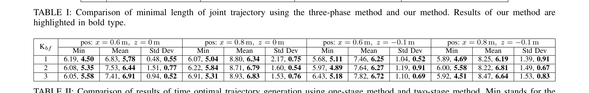
원문 Table I · PDF p.7 — TABLE I: Comparison of minimal length of joint trajectory using the three-phase method and our method. Results of our method are highlighted in bold type.
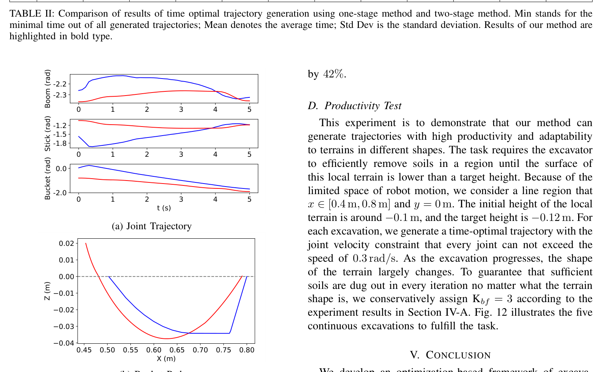
원문 Table II · PDF p.7 — TABLE II: Comparison of results of time optimal trajectory generation using one-stage method and two-stage method. Min stands for the minimal time out of all generated trajectories; Mean denotes the average time; Std Dev is the standard deviation. Results of our method are highlighted in bold type.